Puedes entrar en este santuario desde que llegas a la región de la torre de la llanura. Se encuentra muy cerca de la Posta de la llanura. La clave para superar este santuario es usar el poder de paralizar.
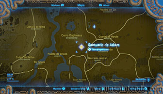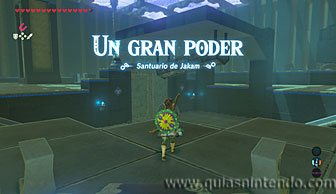
Lo primero que debes hacer es deslizar la esfera metálica de un lado a otro del tubo y después soltarla. Así lograrás que la bola que cuelga con una cadena de ella golpee la puerta y la abra.
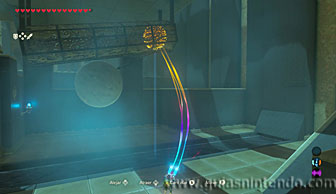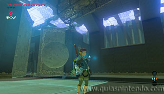
Después tendrás que pasar entre las bolas con pinchos que cruzan a gran velocidad el canal de agua. Lo mejor es que las paralices para pasar tranquilamente.
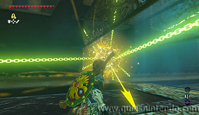
Vas a llegar a una zona con dos miniguardianes que debes destruir, también verás hojas secas alrededor de una plataforma de madera (y una gran roca sobre esta). Puedes abrir un cofre que contiene un mandoble de la serenidad. Después puedes quemar las hojas (ya sea con flechas de fuego o disparando una flecha a la lámpara que cuelga sobre ellas).
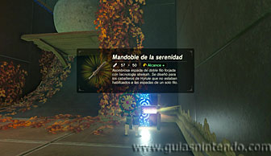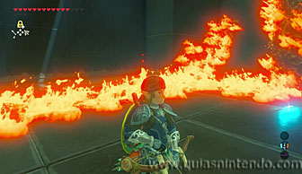
Al hacerlo caerá la gran roca abriendo un nuevo camino justo enfrente. Al pasar por él puedes abrir un cofre a la izquierda (junto a las escaleras que suben) que contiene una espada real.
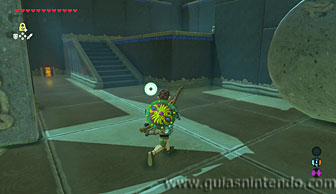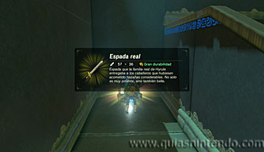
Después sube las escaleras y sigue el único camino posible hasta llegar a otra puerta cerrada y dos nuevos miniguardianes. Acaba con ellos y sigue el camino por otras escaleras (la puerta no podrás abrirla de momento). Vas a pasar por encima de una plataforma que se mueve a modo de balancín, para pasar sin problemas paralízala primero con tu módulo correspondiente. Ahora verás un mecanismo de control por movimiento al que puedes llegar por unas escaleras, aunque si primero sigues el camino por abajo llegas a un cofre que contiene un núcleo ancestral (a la izquierda de la puerta cerrada).
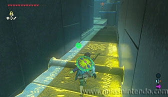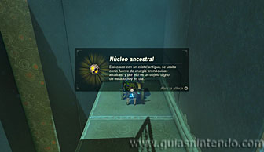
Ahora sí, sube al mecanismo de control y mueve el mando de control de tal modo que el martillo golpee la esfera y esta se deslice hacia el lado derecho rompiendo los bloques que le impiden avanzar.
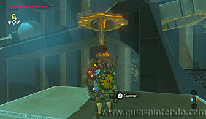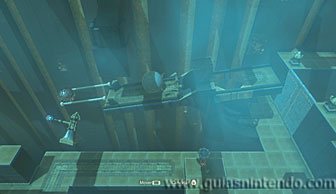
Tendrás que hacerlo varias veces y cuando logres abrir el camino completamente, la esfera caerá en un agujero que activará el mecanismo que abre la puerta.
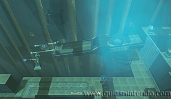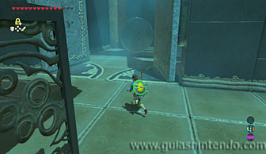
Sigue el único camino posible hasta llegar a una nueva zona, con otra puerta cerrada. Aquí verás una plataforma-balancín y un interruptor. Una bola cae desde un extremo, pero cae al vacío. Lo que debes conseguir es que la bola salga despedida para llegar hasta la plataforma-balancín mientras dure el efecto de paralizar que debes haber usado en ella.
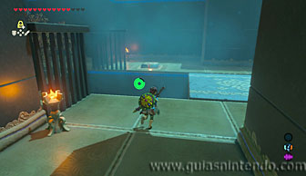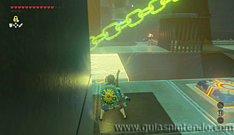
Para lograrlo debes pisar el interruptor del suelo justo cuando la gran roca esté en el borde. Solo así conseguirás darle el impulso necesario para elevar la roca lo suficiente y que alcance la plataforma-balancín. Si lo haces bien y el balancín sigue paralizado, la roca pasará por encima y podrá llegar hasta la puerta para abrirla. Recuerda que si la plataforma-balancín no está paralizada, la roca caerá al vacío.
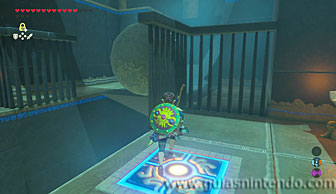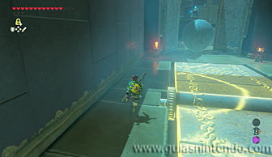
En la siguiente sala verás otro interruptor que al pisarlo abre una reja. Mantente sobre él y paraliza el bloque que tienes delante. Después golpéalo con un arma grande varias veces y lograrás que al terminar el efecto salga disparado hacia delante. No debes separarte del interruptor o la reja bajará y no podrá pasar. Si lo haces correctamente, abrirá la última puerta (antes habías pasado por delante de ella) y se quedará la reja abierta, así que también podrás pasar tú por ahí.
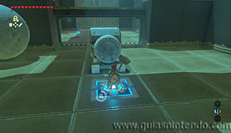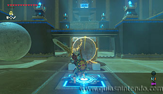
Antes de hacerlo date la vuelta y rompe con bombas los bloques agrietados que hay en la pared. Así descubrirás otro cofre con una rupia plateada en su interior.
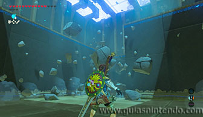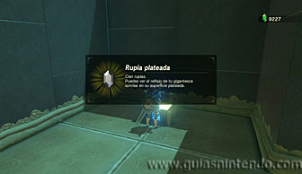
Después avanza hasta las escaleras y al subir llegarás a un interruptor en el suelo. Si te pones delante de él y le golpeas, el suelo se elevará y te lanzará volando.
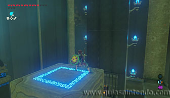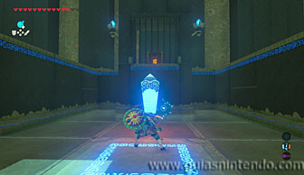
Si planeas a los bordes que hay en los laterales del cofre (bajo el altar), podrás rodear las rejas que se ve delante del cofre y podrás llegar a él y abrirlo. Contiene un diamante.
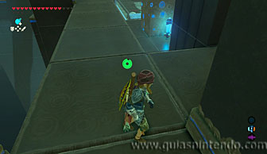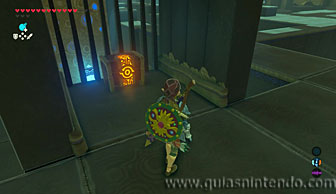
Después vuelve a usar el lanzador de abajo, pero ahora planea hasta la zona más alta, donde se encuentra el altar. Cuando llegues a él podrás examinarlo para obtener un símbolo de valía.
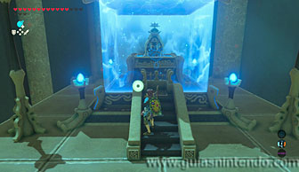